Learn & Build
Step-by-step tutorials to master Arduino and Raspberry Pi programming

Robot Ethics & Safety: Building a Responsible Future for AI in India
Dive into robot ethics and AI safety. Understand privacy, bias, and responsible robotics for a secure, ethical future in India.
Read ArticleWarehouse & Logistics Robots: The Invisible Heroes of E-commerce
Discover the fascinating world of warehouse and logistics robots, from AGVs to Amazon's AMRs, and how they power modern e-commerce.
Read Article
Agricultural Robots: Cultivating the Future of Farming in India
Discover how agricultural robots are transforming farming in India, from planting to harvesting, making agriculture smarter and more sustainable.
Read Article
Soft Robotics: The Squishy Revolution in STEM & AI | MakerWorks
Dive into soft robotics! Learn about flexible, bio-inspired robots, pneumatic actuators, and their amazing applications in STEM.
Read Article
Swarm Robotics: The Power of Many Small Robots Working Together
Discover swarm robotics! Learn how many small robots work together using swarm intelligence for amazing collective tasks.
Read Article
Space Robots: Our Eyes & Hands in the Cosmos | MakerWorks
Discover how space robots like Mars rovers and satellite servicers are pushing the boundaries of cosmic exploration. Learn about the tech and your role in this exciting future!
Read ArticleSurgical & Medical Robots: Saving Lives, Transforming Healthcare in India
Discover the incredible world of surgical and medical robots, from precision surgery to rehabilitation, and their impact on healthcare in India.
Read Article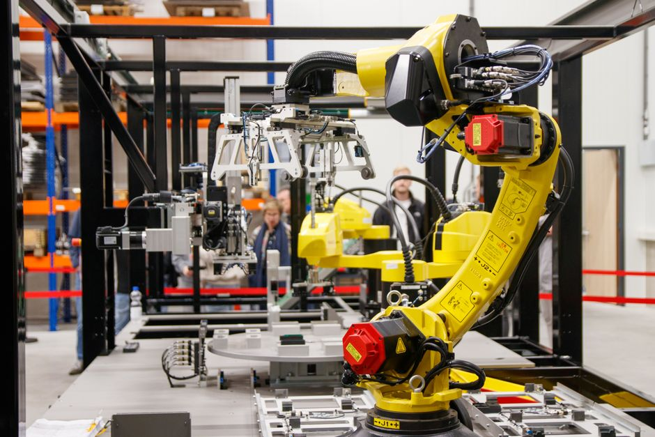
Industrial Robotics & Automation: Powering India's Factories
Dive into industrial robotics! Learn how factory robots and automation are revolutionizing manufacturing in India and beyond.
Read Article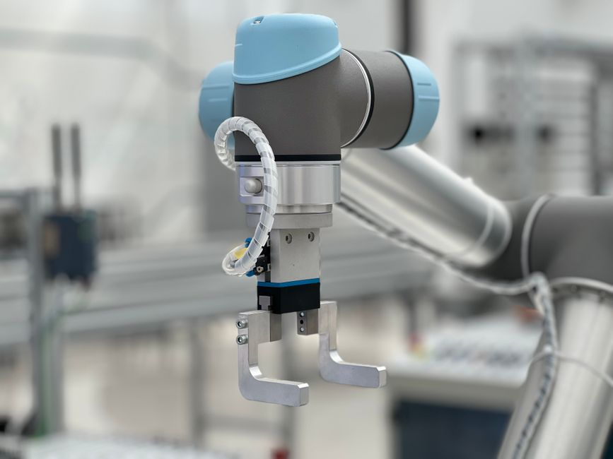
Cobots: The Future of Human-Robot Collaboration | MakerWorks
Discover cobots! Learn how these safe, collaborative robots are transforming industries and creating new opportunities in India.
Read Article
Unlocking the Future: A Deep Dive into Self-Driving Cars & Autonomous Tech
Dive into self-driving cars! Learn about LiDAR, AI, sensor fusion, and autonomous navigation. Your guide to the future of transport.
Read Article
Humanoid Robots & AI: Walking Into the Future | MakerWorks
Dive into the world of humanoid robots and AI. Discover Boston Dynamics' Atlas, Tesla Optimus, and the future of human-robot interaction.
Read Article
Give Your Robot Eyes: Unlocking the Power of Computer Vision
Discover computer vision for robotics! Learn how robots 'see' and interact with their environment using OpenCV. Start your journey today.
Read Article
Reinforcement Learning in Robots: How Robots Learn Like You Do!
Explore Reinforcement Learning in robots: how they learn through trial and error, rewards, and autonomous decision-making.
Read Article
AI in Robotics: How Smart Robots Are Changing Our World
Dive into the world of AI in robotics! Learn how AI makes robots smart, explore key concepts like ML & neural networks, and see real-world applications.
Read ArticleRobot Ethics & Safety: Building a Responsible Future with AI
Discover the importance of robot ethics and safety for young innovators. Learn about privacy, bias, and building responsible AI.
Read Article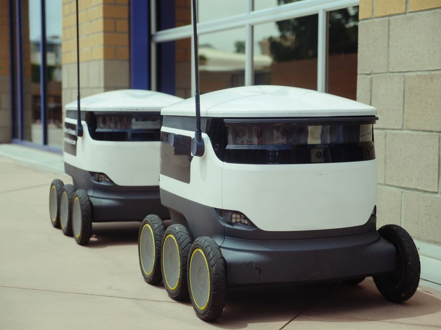
Farm of the Future: Unearthing Agricultural Robots & Automation in India
Discover how robots are revolutionizing agriculture in India, from planting to harvesting. Explore drone farming and AI in smart farms.
Read ArticleSquishy Science: Diving into the World of Soft Robotics
Discover soft robotics! Learn how flexible, bio-inspired robots made of silicone and rubber are changing the future of tech.
Read ArticleUnleash the Power of Many: Dive into Swarm Robotics!
Discover swarm robotics! Learn how simple robots, like ants or bees, collaborate to solve big problems. A future of collective intelligence awaits.
Read ArticleSpace Robots: Our Eyes & Hands in the Cosmos | MakerWorks
Discover the incredible world of space robots – from Mars rovers to satellite servicers – and how they're revolutionizing space exploration.
Read Article
Surgical & Medical Robots: The Future of Healthcare Automation
Discover the incredible world of surgical and medical robots, from da Vinci systems to rehabilitation aids, transforming healthcare in India.
Read Article
Industrial Robotics & Automation: Shaping India's Future Factories
Discover how industrial robots and automation are transforming factories in India, from their types to future trends.
Read Article
Cobots: Your Friendly Robot Coworkers in India's Future
Discover Cobots, the safe and smart robots designed to work alongside humans. Learn about their benefits, applications in India, and future of STEM.
Read Article
Soar High: The World of AI-Powered Drones Explained
Explore AI-powered drones: how they work, their applications, and how you can get started in this exciting field.
Read ArticleUnlocking the Future: A Deep Dive into Autonomous Vehicles & Self-Driving Tech
Discover the magic of self-driving cars! Learn how autonomous vehicles see, think, and navigate, and explore their future in India.
Read Article
Humanoid Robots & AI: The Future is Walking Among Us
Dive into humanoid robots and AI! Discover Boston Dynamics' Atlas, Tesla Optimus, and how these bipedal robots are shaping our future.
Read ArticleComputer Vision for Robotics: Giving Robots the Power to See
Discover how computer vision gives robots 'eyes' to see and understand the world. Learn key concepts, OpenCV, and applications.
Read ArticleReinforcement Learning: How Robots Learn Like Us!
Explore Reinforcement Learning in robotics! Learn how robots use reward systems and trial-and-error to make smart decisions autonomously.
Read Article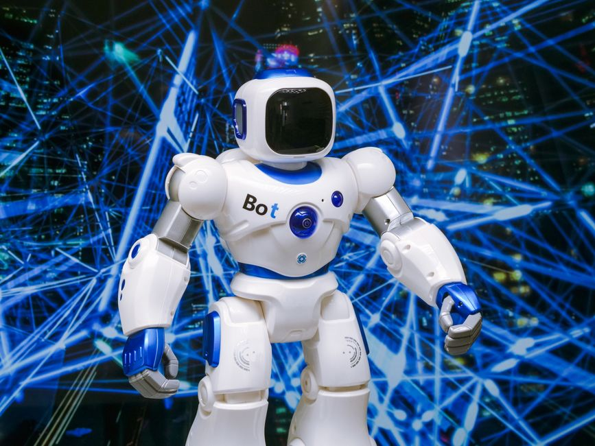
AI in Robotics: The Brains Behind Smart Machines | MakerWorks
Dive into AI in Robotics! Learn how AI, machine learning, and neural networks are making robots smarter and more capable.
Read Article
Robot Ethics & Safety: Building a Responsible Future with AI
Dive into robot ethics & safety! Understand AI dilemmas, responsible robotics, and your role in building a better future.
Read Article
Warehouse Wonders: How Robots Power India's Logistics Future
Discover the fascinating world of warehouse robots! Learn how AGVs, AMRs, and AI are revolutionizing logistics and e-commerce in India.
Read Article
Agricultural Robots: Cultivating the Future of Farming in India
Discover how agri-robots and farm automation are revolutionizing farming in India, from precision planting to drone monitoring.
Read Article
Squishy Wonders: Dive into the World of Soft Robotics with MakerWorks!
Discover soft robotics: flexible, bio-inspired robots made from squishy materials. Learn how they work, their applications, and how to get started.
Read Article
Space Robotics: Our Unsung Heroes of Cosmic Exploration
Explore the incredible world of space robotics! From Mars rovers to orbital mechanics, learn how robots are our eyes and hands in the cosmos.
Read Article
Robots in Scrubs: Exploring Surgical and Medical Robotics
Explore the fascinating world of surgical and medical robots, from precision surgery to rehabilitation, and how they're revolutionizing healthcare.
Read Article
Industrial Robotics & Automation: Powering India's Future Factories
Discover industrial robots and automation: types, applications in India, how they work, and their impact on future factories.
Read Article
Cobots: Your Future Robot Teammates - MakerWorks
Explore the exciting world of collaborative robots (cobots)! Learn how these safe, smart machines work with humans.
Read Article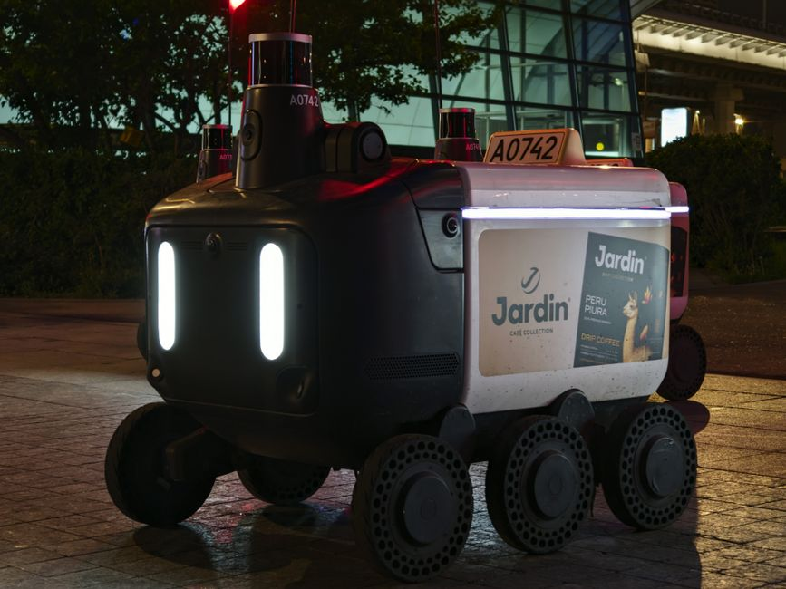
Soaring Smarter: The Incredible World of AI-Powered Drones
Discover the magic of AI-powered drones! Learn how they see, think, and act autonomously, revolutionizing industries in India.
Read Article
Unlocking the Future: A Deep Dive into Autonomous Vehicles
Dive into autonomous vehicles! Discover how self-driving cars work with LiDAR, sensor fusion, and AI. A guide for young innovators.
Read Article
Humanoid Robots & AI: The Future Walking Among Us
Dive into the world of humanoid robots and AI! Learn about Atlas, Optimus, their future applications, and how to start your robotics journey.
Read ArticleComputer Vision for Robotics: Giving Robots the Power to See
Discover computer vision for robotics! Learn how robots 'see' with object detection, image recognition, and OpenCV. Essential for STEM learners.
Read ArticleThe Brains Behind the Bots: Exploring AI in Robotics with MakerWorks
Uncover the secrets of AI in robotics! Learn about machine learning, neural networks, and how robots get their 'smart brain'.
Read Article
Robot Ethics & Safety: Building a Responsible Robotic Future
Dive into robot ethics & safety! Learn about responsible robotics, AI safety, and building an ethical future with MakerWorks.
Read ArticleWarehouse & Logistics Robots: Powering India's E-commerce Future
Discover how warehouse robots are revolutionizing logistics in India. Learn about AGVs, AMRs, Amazon's robots, and kickstart your robotics journey.
Read ArticleAgricultural Robots: Smart Farming for India's Future | MakerWorks
Discover how robots are transforming agriculture in India, from precision planting to drone farming. Learn about the future of smart farming.
Read Article
Unleash the Flex: Dive into the World of Soft Robotics with MakerWorks
Discover soft robotics: flexible, bio-inspired robots made from silicone and air. Learn how they work and their applications.
Read ArticleSwarm Robotics: The Power of Many Little Robots Working Together
Discover swarm robotics: how many simple robots collaborate to achieve complex tasks, inspired by nature's collective intelligence.
Read ArticleSpace Robotics: Your Robotic Journey to the Stars!
Discover how robots are exploring the cosmos, from Mars to orbital servicing. Learn about their missions and how you can get involved in space robotics.
Read Article
Robots in Scrubs: How AI and Automation are Healing India
Discover how robots are revolutionizing medicine, from precision surgery to patient rehabilitation and hospital automation, in India and beyond.
Read ArticleIndustrial Robotics & Automation: Powering Modern Manufacturing in India
Discover industrial robots and automation's role in modern manufacturing, their types, applications, and impact on India's future.
Read ArticleCobots: Your Future Teammate in the World of Robotics & STEM
Explore the exciting world of cobots! Learn how these safe, easy-to-use robots work alongside humans, transforming industries in India.
Read ArticleAI-Powered Drones: The Future is Flying High!
Discover AI-powered drones: how they work, their incredible applications in India, and how MakerWorks can launch your journey into aerial robotics.
Read Article
Autonomous Vehicles: Driving the Future of Robotics & AI
Dive into autonomous vehicles! Discover how self-driving cars work with LiDAR, sensor fusion, and AI. A guide for young robotics enthusiasts.
Read ArticleHumanoid Robots & AI: The Future Walking Among Us
Dive into the world of humanoid robots and AI! Discover Boston Dynamics' Atlas, Tesla Optimus, and the future of bipedal robots.
Read Article
Computer Vision for Robotics: Giving Robots the Gift of Sight
Discover how computer vision gives robots 'eyes' to see and understand their world. Learn basics, applications, and start coding with OpenCV.
Read Article
Arduino Blink LED Tutorial
Learn the classic "Hello World" of Arduino — making an LED blink with simple code.
Read Tutorial
Controlling Motors with Arduino
From DC to Servo motors, this guide helps you spin them all using Arduino.
Read Tutorial
Interface 16x2 LCD with Arduino
Display any message or sensor data using LCDs and I2C modules.
Read Tutorial
Getting Started with Raspberry Pi
Install OS, setup Wi-Fi and explore the terminal for the first time.
Read Tutorial
Using Camera with Pi
Connect the Pi Camera module and capture photos or stream live video.
Read Tutorial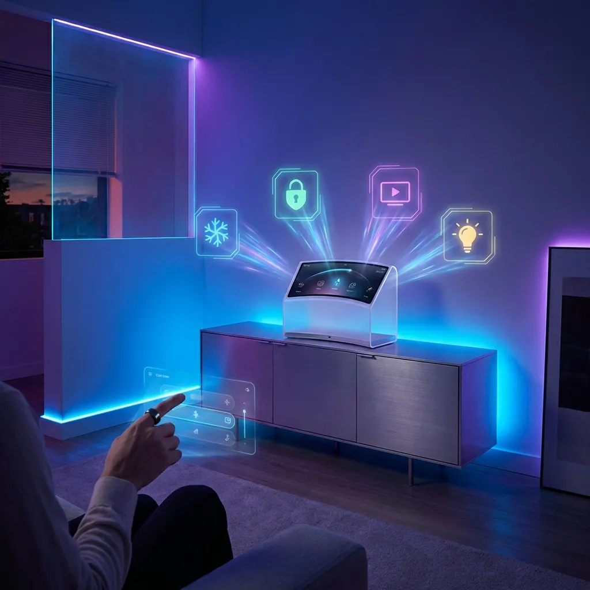
IoT Automation with Raspberry Pi
Build IoT systems with Node-RED, sensors, and web-based controls.
Read Tutorial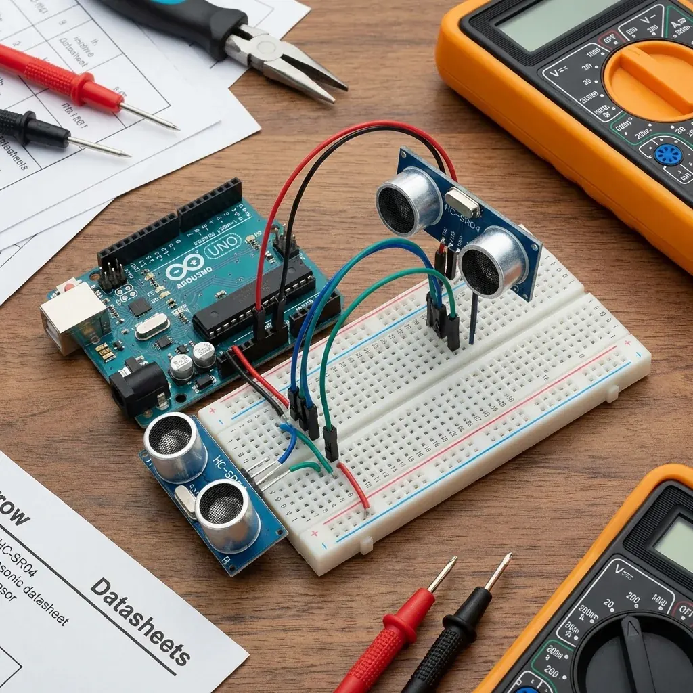
Measuring Distance with Ultrasonic Sensor
Learn how to measure distance and build obstacle-avoiding robots using the HC-SR04 sensor.
Read Tutorial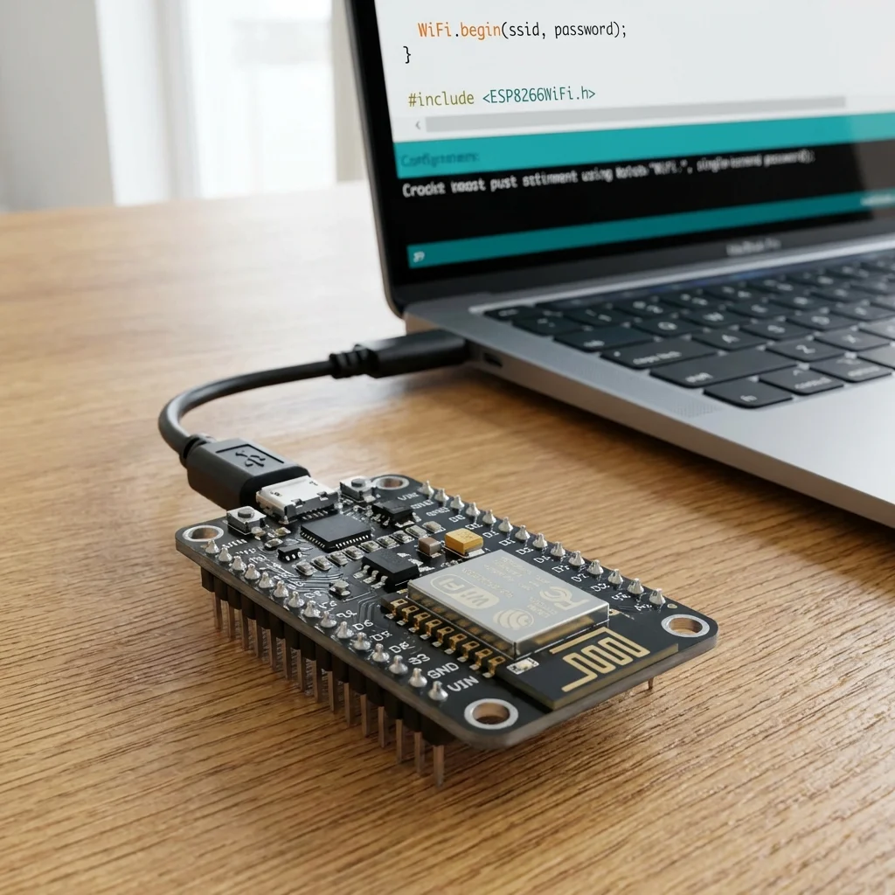
Introduction to NodeMCU (ESP8266)
Get started with the powerful, Wi-Fi enabled NodeMCU board for your IoT projects.
Read Tutorial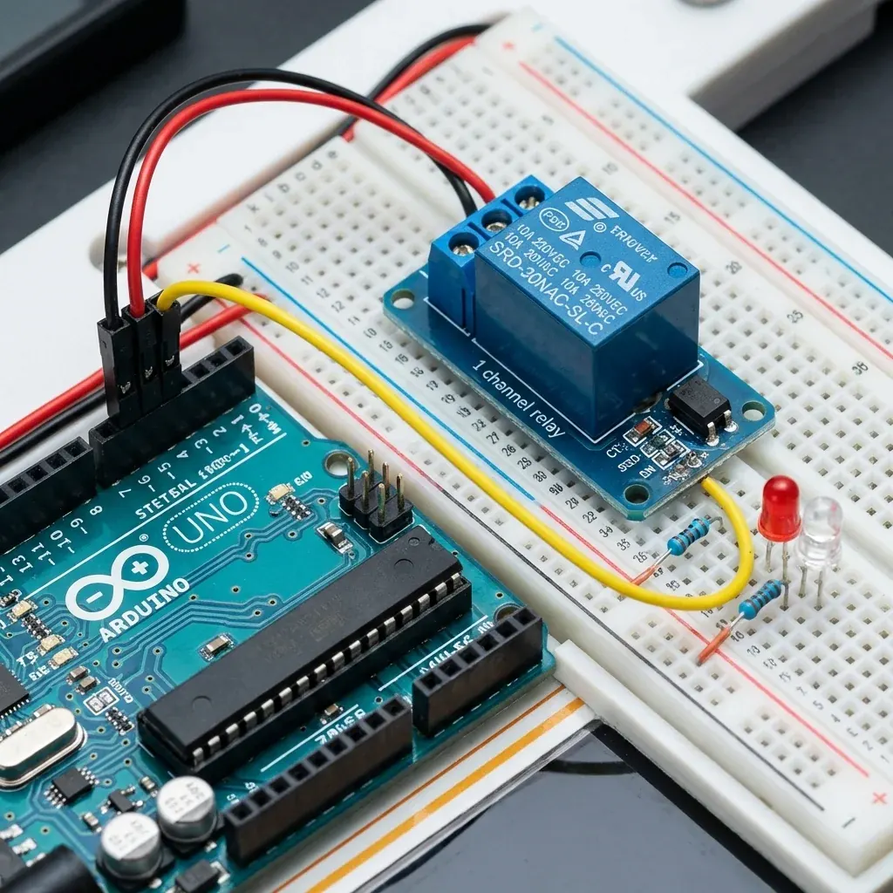
Smart Home Switch using Relay
Control high voltage appliances safely using an Arduino and Relay module.
Read Tutorial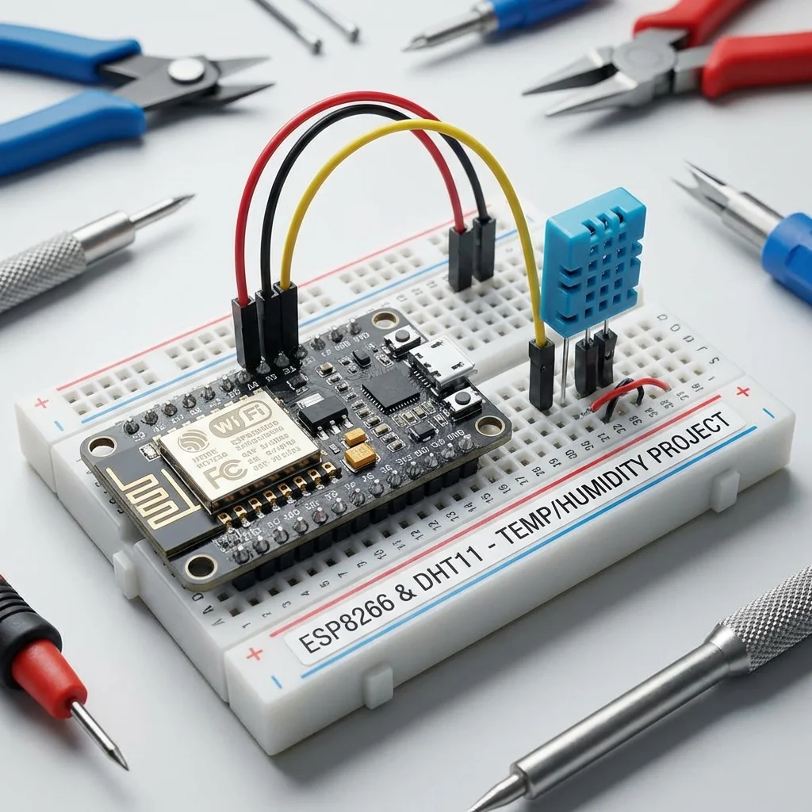
Build a Wi-Fi Weather Station
View temperature and humidity on a web dashboard using ESP8266.
Read Tutorial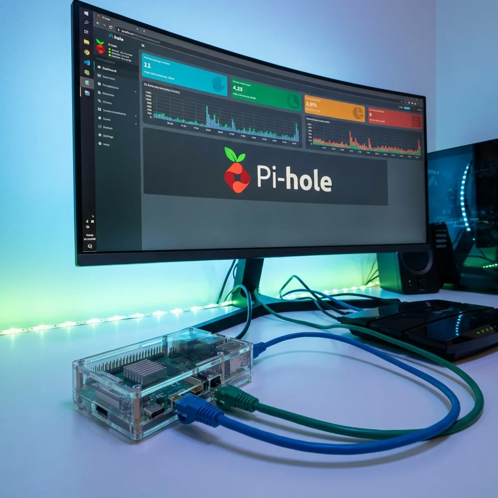
Blocking Ads with Pi-hole
Turn your Pi into a network-wide ad blocker for all your home devices.
Read Tutorial